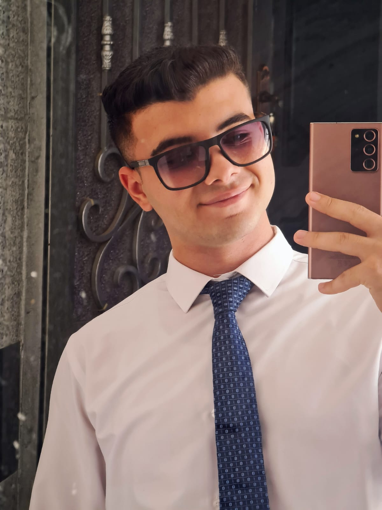

My Personal Info
Your Full Name: Yazan Faisal Alagan
- Age: 19y
- Address: Tanta,Egypt
- Phone: 01026305675
- Faculty Name: PPIS Program Faculty Of Commerce
- Graduation Year: 2028
- Hobbies:
- Photography
- Reading
- Send Me on My E-mail: Yazanfalagan@gmail.com
About Me:
Hello, my name is Yazan Faisal Alagan. I am Egyptian. I have just finished my first year and will be entering my second year at Assiut University, studying in the Faculty of Commerce under a new program called Public Policies & Information Systems (PPIS). I have a passion for Egyptian history, political science, and international law, and I am working on improving my English language skills. I am also interested in learning German and marketing. My hobbies include photography, social media, and organizing events and activities. My goals are to be a good person and help others as much as I can, become a researcher in international law, and get a camera to document everything in my life.